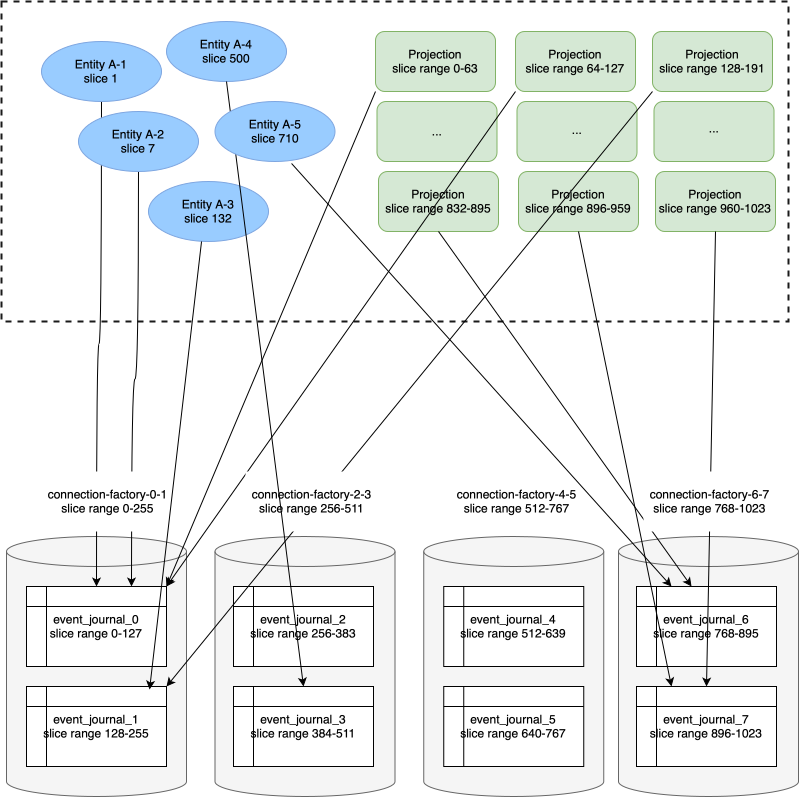

Data partitioning
Using a single non-distributed database can become a bottleneck for applications that have high throughput requirements. To be able to spread the load over more than one database the event journal, snapshot store and durable state can be split up over multiple tables and physical backend databases.
The data is partitioned by the slices that are used for eventsBySlices and Projections. You can configure how many data partitions that are needed. A data partition corresponds to a separate database table. For example, 4 data partitions means that slice range (0 to 255) maps to data partition 0, (256 to 511) to data partition 1, (512 to 767) to data partition 2, and (768 to 1023) to data partition 3.
Number of data partitions must be between 1 and 1024 and a whole number divisor of 1024 (number of slices), e.g. 2, 4, 8, 16. The tables will have the data partition as suffix, e.g. event_journal_0, event_journal_1.
Those tables can be located in physically separate databases. Number of databases must be a whole number divisor of number of partitions, and less than or equal to number of partitions. For example, 8 data partitions and 2 databases means that there will be a total of 8 tables in 2 databases, i.e. 4 tables in each database.
Example
If we configure 8 data partitions and 4 databases it will look like this:

Based on the persistence id an individual entity will map to a specific slice and the entity will read and write to the table that covers corresponding slice range.
If we have 16 projection instances each projection instance will consume events from 64 slices. The query to retrieve events from these slices always map to one single table that covers the slice range. There can be more projection instances than number of data partitions (tables), but not less. Less projection instances than number of data partitions would result in queries that would span over more than one table, which would be inefficient and therefore not allowed.
Each database may host several of the data partition tables. Each database requires a separate connection factory and connection pool.
Configuration
The data partitions are configured with:
source# Number of tables and databases that the data will be split into. The selection of data
# partition is made from the slice of the persistenceId.
# For example, 4 data partitions means that slice range (0 to 255) maps to data partition 0,
# (256 to 511) to data partition 1, (512 to 767) to data partition 3, and (768 to 1023) to
# data partition 3.
# This configuration cannot be changed in a rolling update, since the data must be moved
# between the tables if number of data partitions is changed.
# The number of Projection instances when using eventsBySlices must be greater than or equal
# to the number of data partitions, because a query for a slice range cannot span over more
# than one data partition.
akka.persistence.r2dbc.data-partition {
# How many tables the data will be partitioned over. The tables will have
# the data partition as suffix, e.g. event_journal_0, event_journal_1.
# Must be between 1 and 1024 and a whole number divisor of 1024 (number of slices).
# When number-of-partitions is 1 the table name is without suffix.
number-of-partitions = 1
# How many databases the tables will be partitioned over. A database corresponds to a connection
# factory with its own connection pool.
# Must be a whole number divisor of number-of-partitions, and less than or equal to number-of-partitions.
# For example, number-of-partitions=8 and number-of-databases=2 means that there will be a total of
# 8 tables in 2 databases, i.e. 4 tables in each database.
# The connection-factory setting will have the data partition range as suffix, e.g. with 8 data partitions and
# 2 databases the connection factory settings are connection-factory-0-3, connection-factory-4-7.
# When number-of-databases is 1 there will only be one connection factory, without suffix.
# number-of-databases > 1 not supported by H2.
number-of-databases = 1
}
When using more than one database you must define corresponding number of connection factories. The connection-factory setting will have the data partition range as suffix, e.g. with 8 data partitions and 4 databases the connection factory settings would be:
akka.persistence.r2dbc {
data-partition {
number-of-partitions = 8
number-of-databases = 4
}
connection-factory = ${akka.persistence.r2dbc.postgres}
connection-factory-0-1 = ${akka.persistence.r2dbc.connection-factory}
connection-factory-0-1.host = ${?DB_HOST_0}
connection-factory-2-3 = ${akka.persistence.r2dbc.connection-factory}
connection-factory-2-3.host = ${?DB_HOST_1}
connection-factory-4-5 = ${akka.persistence.r2dbc.connection-factory}
connection-factory-4-5.host = ${?DB_HOST_2}
connection-factory-6-7 = ${akka.persistence.r2dbc.connection-factory}
connection-factory-6-7.host = ${?DB_HOST_3}
}
Schema
Each data partition corresponds to a table. You can copy the DDL statements for the tables and indexes from Creating the schema but change the table and index names to include data partition suffix. For example event_journal_0, event_journal_0_slice_idx, event_journal_1, event_journal_1_slice_idx. Note that the index must also reference the parent table with same data partition suffix.
Changing data partitions
The configuration of data partitions and databases must not be changed in a rolling update, since the data must be moved between the tables and databases if the configuration is changed. The application must be stopped while moving the data.
The data can be copied between tables with SQL such as:
CREATE TABLE event_journal_0 AS (SELECT * FROM event_journal WHERE slice BETWEEN 0 AND 127);
CREATE TABLE event_journal_1 AS (SELECT * FROM event_journal WHERE slice BETWEEN 128 AND 255);
Remember to also create the slice index.
Alternatively, create the tables first and insert the data with SQL such as:
INSERT INTO event_journal_0 SELECT * FROM event_journal WHERE slice BETWEEN 0 AND 127;
INSERT INTO event_journal_1 SELECT * FROM event_journal WHERE slice BETWEEN 128 AND 255;
There are many other ways to move in an efficient way depending on what database you use, such as backups, sqldump and other export/import tools.
The number of tables and their names don’t change by the number of configured databases. If you think you will need more than one database in the future it can be good to start with for example 8 data partitions (tables) in a single database. That will make it easier to move the full tables to the additional databases later.